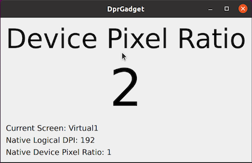

High DPI
High-DPI displays – also known as retina displays – are displays with high resolution (pixels) in relation to their physical size (mm), resulting in a high pixel density, or high number of dots per inch (DPI). The increased resolution is used to provide more detailed content on screen (smoother text, more detailed icons), rather than more content (more windows, larger window sizes).
Qt supports high-DPI displays on all platforms, and provides a unified API that abstracts over any platform differences. Qt will automatically account for the display resolution when using higher level APIs such as Qt Widgets and Qt Quick, and applications only need to provide high-resolution assets, such as images and icons. Changes in the platform's user preferences are automatically picked up.
Lower-level graphics drawing (such as OpenGL code) need to be high-DPI aware, but can use cross platform Qt APIs to learn about the platform's display resolutions.
Conceptual Model
Qt uses a model where the application coordinate system is independent of the display device resolution. The application operates in device-independent pixels, which are then mapped to the physical pixels of the display via a scale factor, known as the device pixel ratio. The scale factor is expressed as a floating point number, for example 1.0 or 2.0, or informally as 1x and 2x.
For example, creating a QWindow or QWidget, and setting its size to 200x200 will cover 200x200 display pixels on a normal density display (with a device pixel ratio of 1.0), but will cover 400x400 pixels on a high density display (with a device pixel ratio of 2.0).
This model applies to most units in higher level Qt Gui, Widgets, and Quick APIs, including widget and item geometry, event geometry, desktop, window and screen geometry, as well as animation velocities.
Note: The model does not handle differences between UI classes, such as the size of touch targets vs mouse targets.
Drawing
Qt will automatically take advantage of the increased density of a high-DPI display when using drawing APIs such as QPainter, or when rendering graphic primitives or text in Qt Quick.
As a result the application can operate in a single unified coordinate system, without needing to account for the possible display densities the application will run on.
However, when using lower level drawing APIs, for example OpenGL, the application needs to take the device pixel ratio of the display into account. This is available both per window, as QWindow::devicePixelRatio() (tracking the device pixel ratio of the window when moved between displays), or per display, as QScreen::devicePixelRatio().
Image buffers such as QImage and QPixmap represent the raw pixels, and as a result do not operate in the device independent coordinate system described earlier. A QImage of size 400x400, with a device pixel ratio of 2.0, will fit a 200x200 QWindow on a high density (2x) display, or will be automatically downscaled to 200x200 during drawing if targeting a normal density (1x) display. See Drawing High Resolution Versions of Pixmaps and Images for more details.
Image Assets
To take advantage of the increased pixel density of high-DPI displays, the application should also include high-DPI versions of static image assets. This is achieved by using a special naming convention for the high density assets, for example logo@2x.png, and loading both the normal density image and the high-density image into a QIcon. Qt will automatically choose the best representation for the target display at runtime. See High DPI Icons for more details.
Device Independent Screen Geometry
Qt applications generally operate in device independent pixels. This includes window and screen geometries reported to the application.
This means that QScreen::geometry() may not return the screen's physical pixel count, or the pixel size as reported by the operating system. This has implications for virtual desktop geometry:
Modern desktop operating systems typically create one shared coordinate system for all connected screens, and allows the user to postion screens to match their physical screen setup, usually via a configuration dialog. If this positioning is done in a coordinate system equivalent to Qt's device independent pixels (like on macOS) then QScreen geometry will match the native screen layout. If the positioning is done in screen physical pixels (like on Windows), then Qt's treatment of screen geometry may introduce "gaps" in virtual desktop geometry unused by any screen.
Specifically, Qt will scale the screen size (resulting in a "smaller" screen for positive scale factors), but will not change the screen position. This will produce an islands-of-screens type virtual desktop geometry.
Application code should not assume that postions immediately adjacent to and outside one screen is a valid position on the neighbouring screen. Instead, get the screen list using QGuiApplication::screens() and use that list to reason about available screen geometry.
Configuring
As an end user you may want to adjust the DPI or scale settings to match display hardware, or to account for viewing distance and personal preferences. These adjustments should be done using the native display settings of the platform, so that all applications will agree on the same DPI or scale factor values. Qt does not provide end user facilities to configure the behavior of Qt's high-DPI support.
The operating system may represent the scale factor either as a factor (1.5), as a percentage (150%), or as dots per inch (144 DPI). Qt translates these to the device pixel ratio seen by the application. In the latter case Qt assumes a "base" DPI – e.g 96 on X11 – and calculates the resulting device pixel ratio accordingly.
Integer scale factors (e.g. 1.0 or 2.0) are preferred for best results. "Rounding" the scale factor to 25% increments can also give good results. Setting the scale factor or DPI to the exact physical display DPI may not give good visual results due to the fractional scaling involved. If the application suffers from visual artifacts in this scenario, it can use QGuiApplication::setHighDpiScaleFactorRoundingPolicy() to limit the scale factors it will see.
Platform Details
The following table describes how to configure high-DPI on various platforms.
| Platform | Configuration |
|---|---|
| macOS | Set the scale for each display in the display preferences. macOS will reflect this to Qt as an integer device pixel ratio. |
| Windows | Set the scale factor for each display in the display settings. The base scale factor is 100%, and can be adjusted in 25% steps. |
| Ubuntu | Set the scale factor in display settings. On Ubuntu 20.04 and later this can be done per display, in increments of 25%. Earlier versions support setting a global scale to either 100% or 200%. |
| X11 | Set Xft.dpi, or opt-in to use physical DPI. See "Configuring X11" below. |
| Wayland | Qt reads wl_output::scale, which is restricted to integer values. Wayland compositors typically have a configuration option for setting the scale factor, for example weston --scale. |
| EGLFS | Set QT_FONT_DPI to the desired logical DPI value, for example QT_FONT_DPI=192. Qt assumes that the base DPI is 96, and scales the UI accordingly. |
Note: Some windowing systems may have limitations that are then reflected in Qt. Qt does not provide workarounds for these limitations. Instead, consider workarounds on the windowing system level.
Configuring X11
The required configuration input to Qt is per-screen logical DPI. Currently, X11 provides either global logical DPI or per-screen physical DPI. Neither of these are exactly what Qt needs, which can make DPI configuration on X11 more complicated than on other platforms.
Desktops environments such as Ubuntu and Kubntu implement workardounds for the lack of logical DPI, and provide easily configurable high-DPI support. If you instead want to configure X11 DPI settings manually then this section decribes which X11 settings Qt reads.
Some X11 configuration workflows involves overriding the reported physical size of the screen in order to make DPI calculations yield a spesific DPI value. Qt supports this workflow, but this requires opting in, as described below.
The exact configuration priority is as follows, where Qt uses the first option available. Note that the behavior depends on the Qt version in use. Qt 5 behavior assumes that AA_EnableHighDpiScaling has been set (this flag is not needed on Qt 6).
| X11 DPI Configuration Priority | ||
|---|---|---|
| Property | Notes | |
| 1. Xft/DPI | From X settings. Global logical DPI value. | |
| 2. Xft.dpi | From X resources. Global logical DPI value. | |
| 3. RandR physical DPI [Qt 5 Only] | DPI calculated from per-screen physical size and pixel size, as reported by randr. specifically, the mwidth and mheight fields of the xcb_randr_screen_change_notify_event_t structure is used. The DPI will be rounded to an integer and clamped to be not less than 96. | |
| 4. 96 DPI | Fallback value. | |
The QT_USE_PHYSICAL_DPI override
Set QT_USE_PHYSICAL_DPI=1 to make Qt use RandR physical DPI unconditionally; specifically the mwidth and mheight fields of the xcb_randr_screen_change_notify_event_t structure is used. The DPI value will be rounded to an integer.
Configuring Windows
Qt uses the Windows display scale settings automatically; no spesific settings are required. For example, if a display is configured for 175% scale then Qt apps will see a device pixel ratio of 1.75 on that screen.
Windows defines severalDPI Awareness levels, which applications set in order to opt-in to high-DPI featuers. Qt 6 is Per-Monitor DPI Aware V2 by default. If you are incorporating code which assumes a single global DPI then you might want to set a different awarness level. This can be done by adding an entry to qt.conf:
[Platforms] WindowsArguments = dpiawareness=0,1,2
Testing
QT_SCALE_FACTOR
Set the QT_SCALE_FACTOR environment variable to provide a global scale factor for the application.
QT_SCALE_FACTOR=2 ./myapp
This scales all application geometry (including the device pixel ratio) by the given factor, which enables testing high-DPI support independently of available hardware. The set scale factor will be used as-is by Qt, and will not be affected by the rounding policy.
The effective device pixel ratio, as returned by QWindow::devicePixelRatio(), will be a product of the set scale factor and the native device pixel ratio. For example, setting QT_SCALE_FACTOR=2 on a 2x Wayland display will result in the application seeing a device pixel ratio of 4.
DprGadget
The DprGadget test application can be used to inspect the native configuration, and how Qt reacts to it:

DprGadget displays the device pixel ratio of the window, as reported by QWindow::devicePixelRatio(). In addition is displays the native DPI and device pixel ratio of the screen the widow is on, as reported by QPlatformScreen::logicalDpi() and QPlatformScreen::devicePixelRatio().
The displayed values should be updated automatically on screen and DPI changes, and the dialog should maintain the same size. If this does happen then that indicate there might be a bug in Qt.
DprGradget is a part Qt's manual test suite, and can be found at qtbase/tests/manual/highdpi/dprgadget.
Environment Variable Reference
This section lists high-DPI related environment variables recognized by Qt. In alphabetical order:
- QT_ENABLE_HIGHDPI_SCALING Set to 0 to disable high-dpi scaling; effectivly reverting to Qt 5 defualt behavior. Note that this has no effect on platforms such as Walyand or macOS - it does not disable any native high-DPI support. This variable is intended for testing purposes only, and we do not recommend setting it on a permanent basis.
- QT_FONT_DPI Sets a global DPI. This is a legacy environment variable provided for backwards compatibility.
- QT_SCALE_FACTOR Sets a global scale factor. For debugging and testing purposes.
- QT_SCALE_FACTOR_ROUNDING_POLICY Sets the scale factor rounding policy, which is applied to the scale factor computed from screen DPI. Supported values include
- Round (Qt 5 default)
- PassThrough (Qt 6 default)
- QT_SCREEN_SCALE_FACTORS Sets a list of screen scale factors. The list can be in one of two formats; either a semicolon-separated list of screen scale factors ("1;1.5;2"), or a semicolon-separated list of screen=factor entries ("screenA=1;screenB=1.5;screenC=2"). Setting this environment variable is not recommended since it prevents Qt from using system DPI values.
- QT_USE_PHYSICAL_DPI Makes Qt use physical DPI instead of logical DPI. Using logical DPI is normally the best option; this environment varible can be set in cases where logical DPI is not available and the physical DPI is known to be correct.